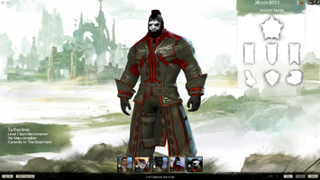

Guild Wars 2
Dieser Artikel wurde für die folgenden Ubuntu-Versionen getestet:
Dieser Artikel ist mit keiner aktuell unterstützten Ubuntu-Version getestet! Bitte diesen Artikel testen und das getestet-Tag entsprechend anpassen.
Zum Verständnis dieses Artikels sind folgende Seiten hilfreich:
Guild Wars 2  (deutsch: Gildenkriege) ist ein klassenbasiertes PvE- und PvP-Onlinespiel, das unter der Kategorie MMORPG einzusortieren ist. Das Grundspiel ist seit 30. August 2015, mit einigen Einschränkungen, kostenlos. Alle vorhandenen Einschränkungen werden in der Ankündigung der kostenlosen Version genau erläutert.
(deutsch: Gildenkriege) ist ein klassenbasiertes PvE- und PvP-Onlinespiel, das unter der Kategorie MMORPG einzusortieren ist. Das Grundspiel ist seit 30. August 2015, mit einigen Einschränkungen, kostenlos. Alle vorhandenen Einschränkungen werden in der Ankündigung der kostenlosen Version genau erläutert.
Die Handlung in Guild Wars 2 spielt 250 Jahre nach dem ersten Teil. Wer an mehr Details interessiert ist, schaut in das projekteigene Wiki oder in die Wikipedia (siehe Links).
|  |
| Charaktererstellung |
Installation¶
Manuell¶
Zuerst installiert man die benötigten Pakete [1]:
wine (universe)
mpg123 (universe)
 mit apturl
mit apturl
Paketliste zum Kopieren:
sudo apt-get install wine mpg123
sudo aptitude install wine mpg123
Um den Client herunterladen zu können, ist eine kostenlose Registrierung erforderlich. Die benötigte Datei hat den Namen Gw2.exe (32-bit-) bzw. Gw2-64.exe (64-bit-Systeme).
Anschließend führt man das Installationsprogramm mit Wine aus [2]:
32-Bit:
wine ./Gw2.exe
64-Bit:
wine ./Gw2-64.exe
Jetzt startet das Setup, welches alle benötigten Dateien vom Guild Wars 2 Server herunterlädt und anschließend installiert (ca. 25 GiB). Die zum Spiel gehörenden Dateien werden im Ordner ~/.wine/drive_c/Programm Files/Guild Wars 2 gespeichert.
PlayOnLinux¶
Es besteht auch die Möglichkeit, dass Spiel über PlayOnLinux zu installieren. Der Vorteil ist, dass Wine entsprechend angepasst wird, um das Spiel mit den optimalen Einstellungen zu starten.
playonlinux (multiverse)
mit apturl
Paketliste zum Kopieren:
sudo apt-get install playonlinux
sudo aptitude install playonlinux
PlayOnLinux kann dann sofort gestartet werden [3]. Im Reiter "Installieren" wählt man Guild Wars 2 aus und folgt den Anweisungen auf dem Bildschirm.
Bedienung¶
Das Spiel wird mit der Maus und der Tastatur bedient. Am Anfang des Spiels und im Laufe des Spiels, wenn neue Funktionen "erlernt" werden, erscheinen immer wieder Tooltips, die dem Spieler leicht und deutlich erklären, wie die genaue Bedienung seines Charakters aussieht.
| Grundlegende Bedienung | |||
| Taste | Funktion | ||
 | Ziel markieren | ||
 | Interagieren | ||
 | Zoom | ||
| Esc | Spiel Menü | ||
 | Charakter bewegen | ||
| Springen/Auftauchen | |||
| F | Interaktion mit Gegenständen und anderen Spielern | ||
| I | Inventar | ||
| H | Heldendialog | ||
| G | Gildendialog | ||
| M | Weltkarte | ||
Performance¶
DirectX 9¶
Um die Unterstützung für DirectX 9 nutzen zu können, müssen noch einige dynamische Programmbibliotheken (.dlls) installiert werden:
wget http://kegel.com/wine/winetricks sh winetricks d3dx9
Speicher der Grafikkarte¶
Wichtig ist, dass der Speicher für die Grafikkarte unter Wine richtig eingestellt wurde. Die Einstellungen können wie folgt vorgenommen werden:
winecfg
Zu "HKEY_CURRENT_USER → Software → Wine" navigieren
Den Schlüssel "Direct3D" (wenn er noch nicht existiert) erstellen
Einen neuen Schlüsselinhalt mit einem String-Wert erstellen, der folgende Werte enthält
"VideoMemorySize" - den Wert in MiB angeben, z.B.
2048Mfür 2 GiB. Wichtig ist das M am Ende.
Einen weiteren Schlüsselinhalt mit einem String-Wert erstellen, der folgende Werte enthält
"GLSL" mit dem Wert "disabled"
Problembehebung¶
Launcher/Spiel hängt¶
Um dieses Problem zu beheben, erzwingt man die Verwendung von DirectX 9 mit der Option -dx9single beim Programmstart.
Geringe FPS-Zahl¶
Um eine geringe FPS-Zahl zu vermeiden, sollten die proprietären Treiber für AMD- und NVidia-Grafikkarten installiert werden.
Eingefrorener Bildschirm¶
Um das Problem zu umgehen, hilft es den Launcher in einem virtualen Desktop zu starten:
32-Bit:
wine explorer desktop=gw2,1024x768 Gw2.exe
64-Bit:
wine explorer desktop=gw2,1024x768 Gw2-64.exe
Audio-Probleme¶
Um Audio-Probleme zu umgehen, sollte folgendes beachtet werden:
neuste Wine-Version
neuste PulseAudio-Version
Infobox¶
| Guild Wars 2 | |
| Genre: | MMORPG (Massively Multiplayer Online Role-Playing Game) |
| Sprache: |     (nur Text) (nur Text)  |
| Veröffentlichung: | 2012 |
| Publisher: | ArenaNet |
| Systemvoraussetzungen: | Internet (DSL), min. 2 GHz, 2 GiB Arbeitsspeicher, 25 GiB freier Festplattenspeicher, 3D-Grafikkarte mit mind. 256 MiB, Soundkarte |
| Medien: | Download, DVD |
| Läuft mit: | Wine |
- Erstellt mit Inyoka
-
 2004 – 2017 ubuntuusers.de • Einige Rechte vorbehalten
2004 – 2017 ubuntuusers.de • Einige Rechte vorbehalten
Lizenz • Kontakt • Datenschutz • Impressum • Serverstatus -
Serverhousing gespendet von